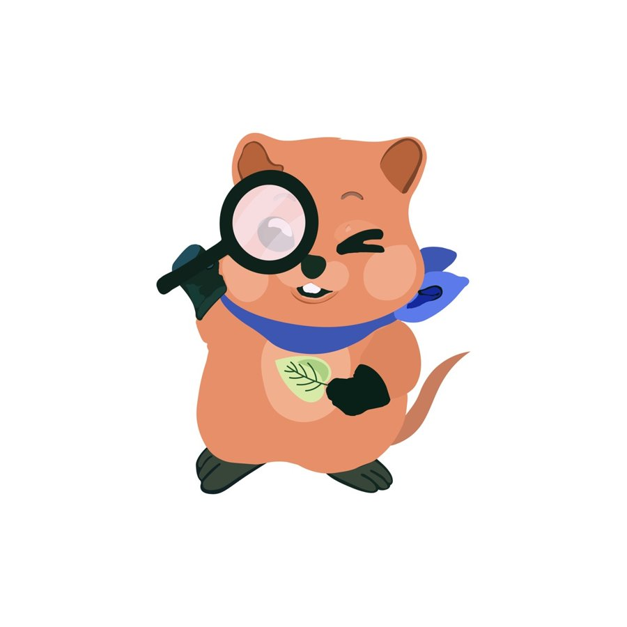
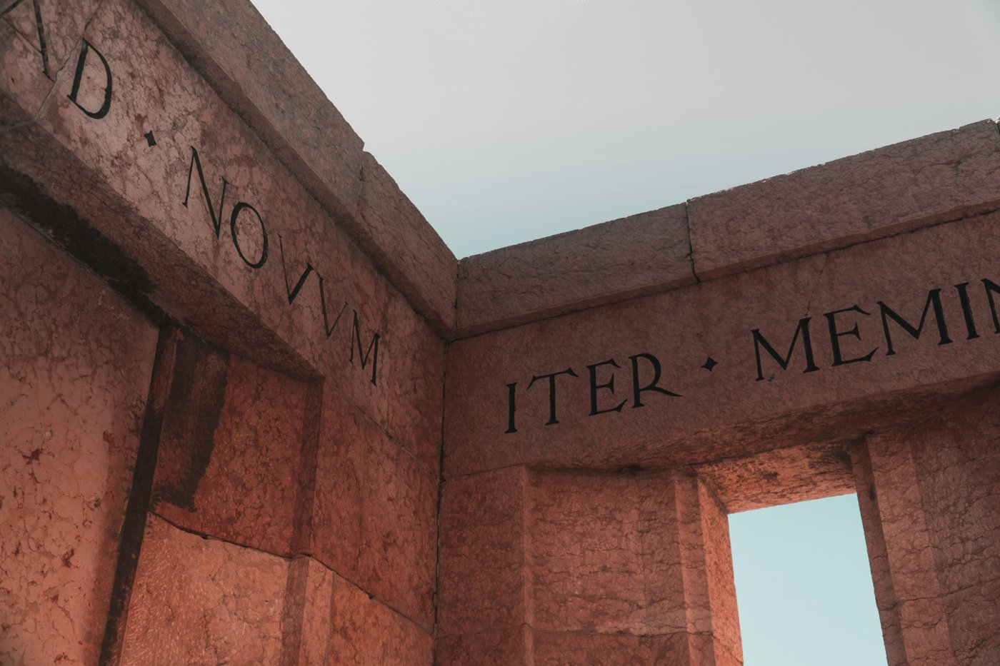

Semper Discens’s motto: Studying with a happy, positive attitude.

Semper Discens - derived from the Latin, with the meaning "Always Learning", a foundation of academic knowledge. Semper Discens is a name taken from the Latin language - the language of the Roman civilization, which is considered to be one of the most intelligent ancient civilizations to date.
We owe the development of a large number of subjects to the Roman Empire contributions, like philosophy, medicine, criminal justice model, psychology, and some of today’s academic vocabulary.

We hope to deliver the most diverse and refined knowledge possible. Currently, Semper Discens has many topics such as Physics, Biology, Economics, Social Discussion, History, Culture and certainly in the future we will continue to expand our topic sections to help readers attain more knowledge and create a place for us to discuss and give our opinions on specific topics.
We have pondered that the "current market" contains a lot of common knowledge, but none of it is in-depth nor is it advanced for those who seek to understand further. But we as people who are eager to learn, have a desire to expand everyone's knowledge, hope for an "environment for academic information, professional knowledge" such as quantum physics, immunology, astrophysics, finance, psychology and many other uncommon subjects that few people have knowledge of. The academic knowledge you are probably thinking of is not interesting and "dry", so Semper Discens was born.
If you have the same opinion on public knowledge, then Semper Discens is the place for you.
If you are still wondering and feeling confused, give Semper Discens a chance and we will be there for you and convince even the most difficult readers.
If you are ready to enter the colorful world of Semper Discens, give us a subscribe to see the upcoming article.
We make sure that upcoming articles will leave you feeling astonished and exhilarated.
Don't forget to look forward to new and exciting things to come.